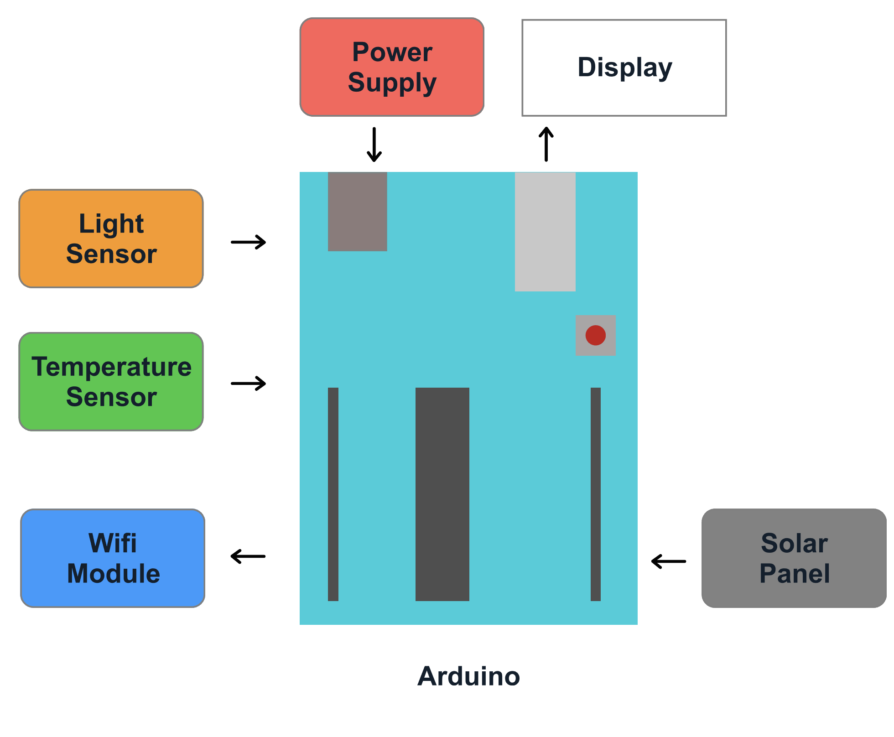

By integrating sensors that target specific environmental parameters, it is possible to see how these parameters affect the instantaneous voltage produced by solar panels. For this project a 5V solar panel, an Arduino uno, a TM35 sensor and a light intensity sensor was used in making a smart solar panel. For anyone aware of the trends in renewable energy sources, it is common knowledge that the major problem faced by solar energy generation is the low efficiency from solar panels. A lot of factors affect the efficiency of solar panels as they interact with various physical parameters depending on the environment. As such it is important to find an effective way to monitor the performance of these solar panels in order to find possible solutions to the efficiency problem.
The purpose of this project is also to create designs for the web application for which the sunticker solar panel monitoring system can be visualized. This project serves as a continuous brain storming case. As such any contribution is welcome. The designs have certain fundamental features that are necessary and as such must be considered in the design process.